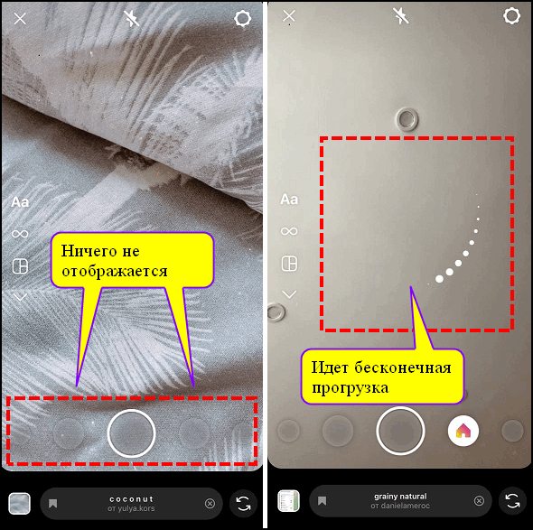
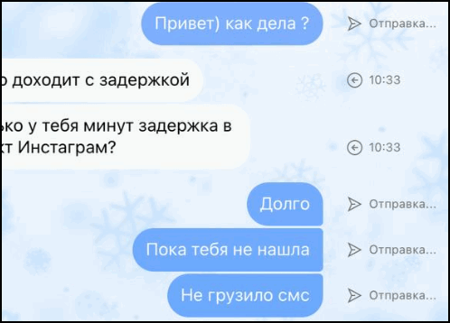
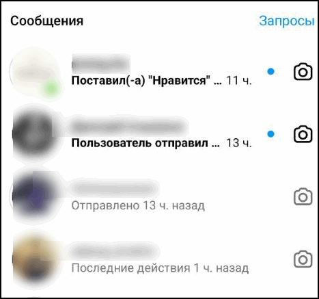
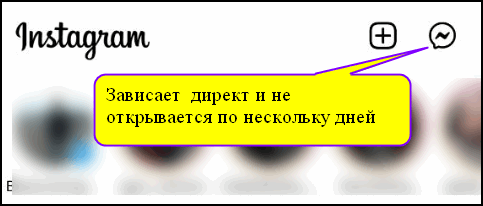
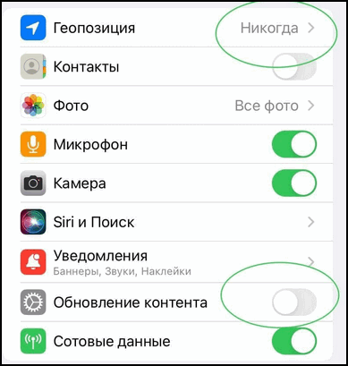
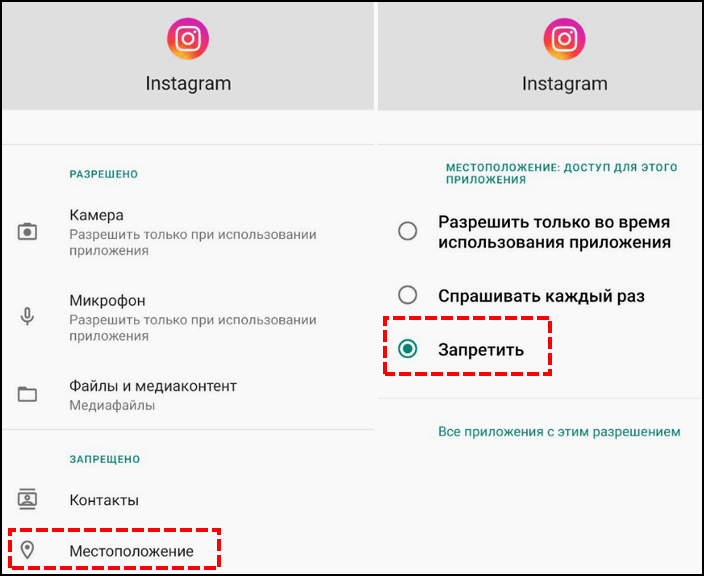
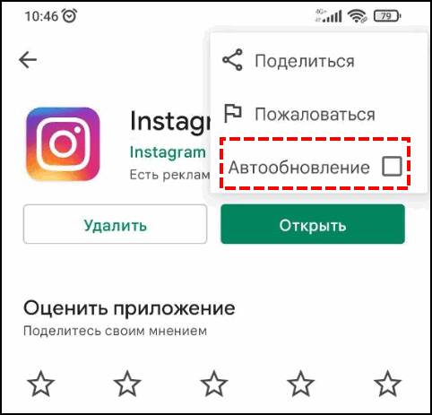
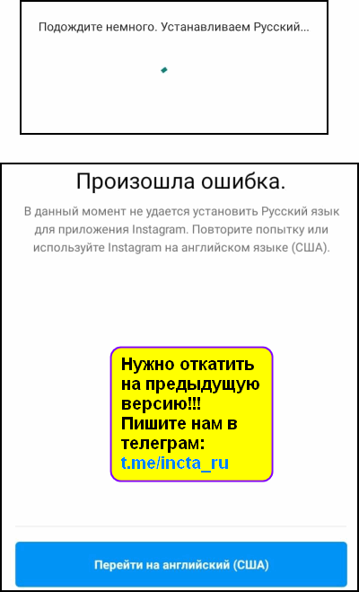
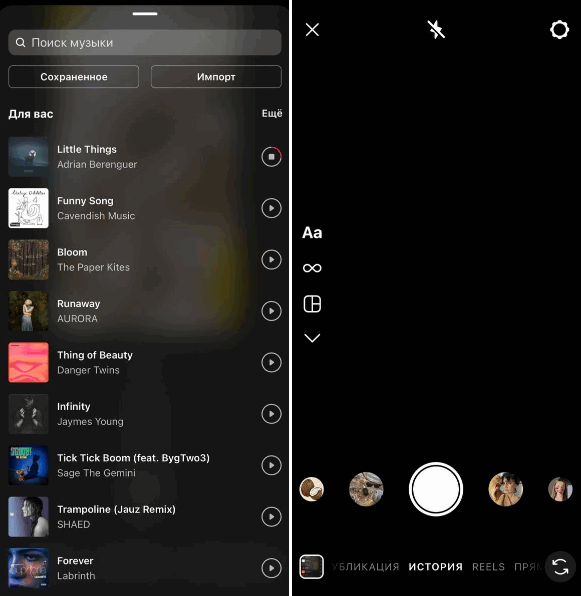
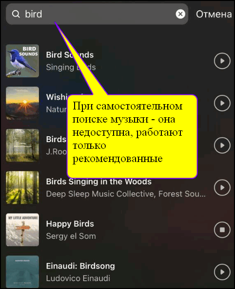

Сбои в Инстаграм: не работают маски, директ

В связи с последними событиями социальная сеть Инстаграм* стала работать с определенными сбоями. Последняя рабочая версия Instagram* - 223.1.0.14.103 на ней не пропал Русский язык. Маски в Инстаграм* перестали работать, но их можно вернуть, достаточно отключить геолокацию и автообновление. Подробная инструкция расписана ниже со скринами.
Как избежать сбоев
В каждом аккаунте есть свои неполадки связанные с работой приложения:
- Пропали маски (фильтры), которые можно было использовать при записи Reels и Историй, если не работают маски в Инстаграм*.

- Сообщение, приходящие в Direct, появляются с задержкой. Ответ на ваше смс от другого пользователя в диалоге появляется ни сразу.

- Прочитанные сообщения, вновь помечаются непрочитанными (в течении суток - двух).

- У крупных блогеров, в связи с большой аудиторией, которая постоянно отвечает на Сторис и тд. Direct не открывался несколько дней.

Чаще открывайте диалоги в Инстаграм*, чтобы быстрее получать сообщения от других пользователей, так как уведомления приходят с огромной задержкой.
Что делать чтобы не пропал Русский язык в Инстаграм*
Что необходимо сделать для стабилизации работы на Айфоне:
- Зайти в настройки.
- Найти приложение Instagram*, нажать на него. И сделать все как показано на фото.
- Геопозиция -> Никогда, Обновление контента -> Выключить.

Действия для Андроид читайте в нашем Телеграм или ниже в статье (подпишитесь, там оперативно будем сообщать обо всех изменениях). Убираем обновление и геопозицию на Андроиде чтобы не пропал Русский язык в Инстаграм*:
- Перейти в настройки -> Приложения -> Найти Instagram*.
- Разрешение приложений -> Местоположение -> Запретить.

- Заходим в Плей Маркет -> Находим Инстаграм* -> 3 точки -> отключить автообновление.

Существуют также специальные приложения:Данные меры временные, в скором времени можно будет вернуть все обратно, снова будут мгновенные уведомления, не рабочие маски станут доступны в Сторис, а сбои в Директ Инстаграма* прекратятся.
Что делать, если не успел отключить обновления
Если не изменить настройки как указано выше, то через некоторое время у вас появится уведомление, что на Русском языке Инстаграм* не работает: "В настоящий момент не удается установить Русский язык для приложения Instagram*, используйте Английскую версию - США (USA)" Единственный выход - скачать рабочую версию Instagram*.

Если у вас уже случилась данная проблема и Инстаграм* работает только на Английском языке, единственный выход - откатить версию на предыдущую, подписывайтесь на наш телеграм - t.me/incta_ru, там скинем вам рабочую версию на Русском (на данный момент в версии 223.1.0.14.103 проблем не наблюдается).Не работает наложение музыки в Reels - решение
Мы нашли крутое приложение, которое позволит Вам вернуть работу прежнего Instagram*.
Итак в отличие от других приложений, версия полностью бесплатная. Если данное приложение подключается к стране, то не загружается раздел Reels и не работают маски в Сторис Инстаграм*.
После установки приложения, редактирование Reels, а именно наложение музыки, работает в прежнем режиме. Маски в Сторис прогружаются и отлично работают.

Музыка в Рилс работает, но не вся
Сегодня у многих пользователей возникла такая проблема: не вся музыка добавляется в Reels, а только предложенный плейлист. Если вы самостоятельно ищите другие песни или звуки, то их добавить не получается, мы пробовали искать на Русском и Английском языках и везде встречается эта ошибка - слова этой песни не доступны и наложить на фото их не получается.
Решаем вопрос в своем ТГ канале t.me/incta_ru. 